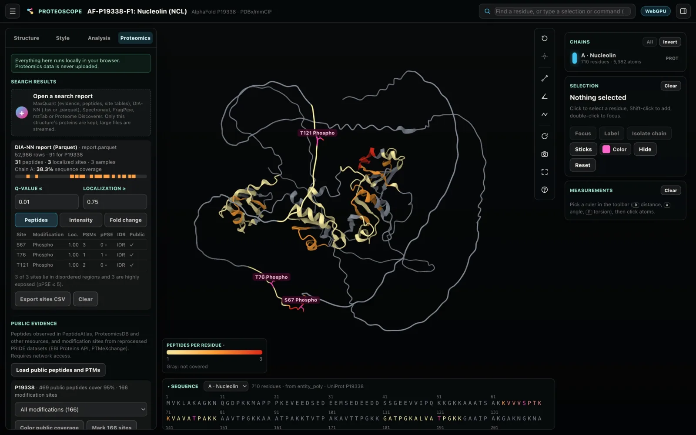
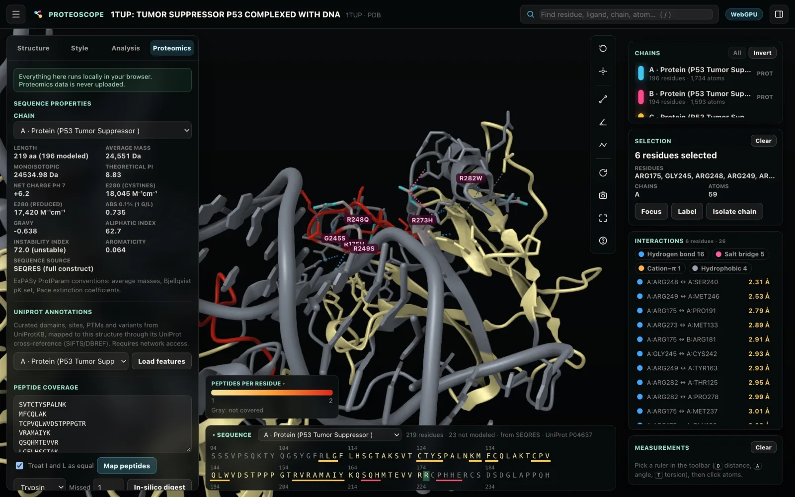
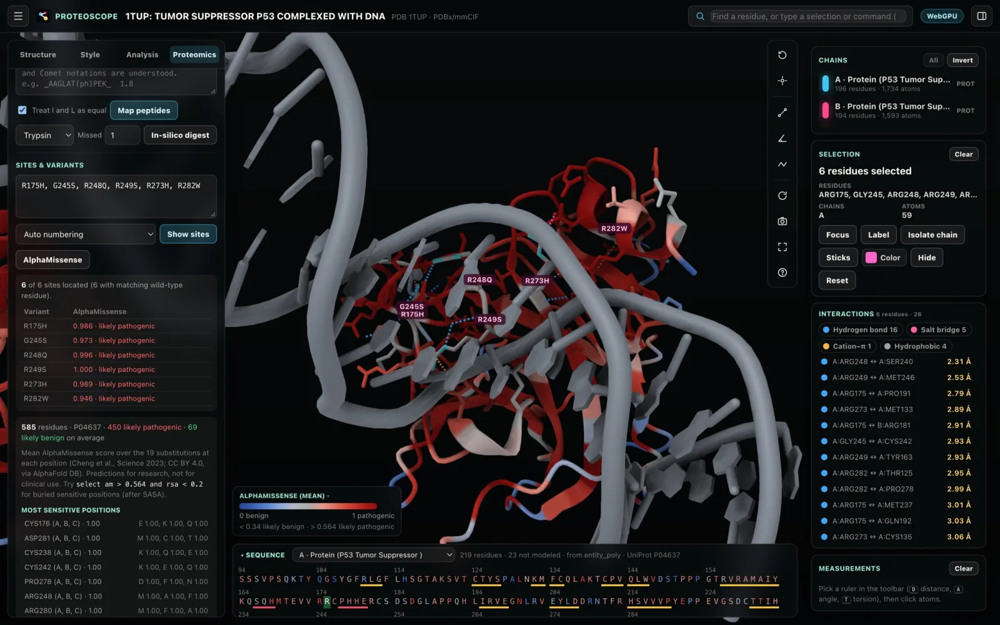
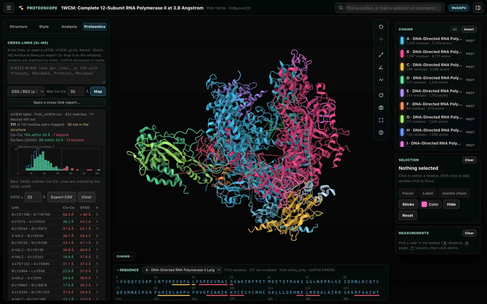
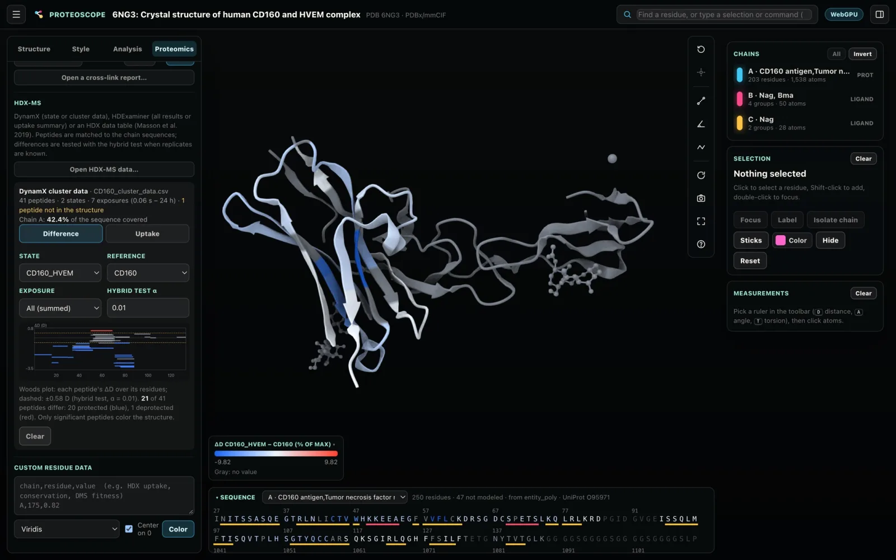

Proteomics
Everything in the Proteomics tab runs in your browser, and your data is never uploaded. Put search results, differential statistics, public evidence, peptides, sites and variants, cross-links, HDX-MS and your own per-residue values on the structure.
Search engine results
Open a search engine's report, or drop it on the window. Proteoscope keeps only the rows of the active structure's proteins, matched by UniProt accession or by sequence, so a multi-gigabyte report of a whole proteome is streamed rather than loaded.

Supported reports
| Tool | Files |
|---|---|
| MaxQuant | evidence.txt, peptides.txt, site tables such as Phospho (STY)Sites.txt |
| DIA-NN | report.tsv, report.parquet (1.9 and 2.x), pr_matrix.tsv, site reports |
| Spectronaut | Normal and PTM site reports |
| FragPipe | psm.tsv, peptide and site tables |
| mzTab | Peptide (PEP) and PSM sections, with modification probabilities |
| Proteome Discoverer | PSM and peptide group exports with ptmRS probabilities |
Filtering
- Decoys and contaminants are dropped.
- q-value and localization thresholds apply as you type.
- Semicolon-separated exports with decimal commas are read as such.
- Localization probabilities are read from each tool's notation: MaxQuant's
S(0.98), DIA-NN, Spectronaut, ptmRS and mzTab.
What the structure shows
The structure shows one of:
- coverage;
- peptide or PSM counts;
- log10 intensity over the samples you choose;
- the log2 fold change between two groups of samples. Spectronaut conditions are grouped automatically.
The sites table
The sites table lists every localized site with:
- its localization probability and value;
- its part-sphere exposure;
- whether it lies in a disordered region;
- with public evidence loaded, whether the site is already known.
Click a site to focus it. Export the table as CSV.
Differential statistics
With two sample groups chosen, Test B vs A runs a moderated t-test on every feature of the whole report, all proteins included, not only those of the active structure. The prior of limma's empirical Bayes needs many features.
The test
- Log2 intensities, with optional median normalization and a minimum number of values per group.
- Optional imputation of missing values from a down-shifted normal distribution, as Perseus does.
- Benjamini–Hochberg q-values.
- For PTM sites, the protein's change (the median of its unmodified peptides) is subtracted, with Welch–Satterthwaite degrees of freedom, as MSstatsPTM does.
Results
- A volcano plot shows the result. Click a site's point to focus it.
- Sites are colored by fold change only when they are significant.
- The sites CSV gains each site's fold change, p, q and degrees of freedom, and for adjusted sites the protein's change.
The results match limma and MSstatsPTM on the same data.

Public evidence
Load public peptides and PTMs fetches, through the EBI Proteins API:
- the peptides observed for the structure's proteins in PeptideAtlas, ProteomicsDB and other resources;
- the modification sites from reprocessed PRIDE datasets (PTMeXchange).
You can then color the public coverage, mark the sites, filter by modification type, and compare them with your own report's sites: each of your sites is marked ✓ when it is already known and new when it is not. From the command line, use evidence.
Sequence properties
Sequence properties follow ExPASy ProtParam conventions:
- average and monoisotopic mass;
- the Bjellqvist pI;
- net charge at pH 7;
- ε280 with and without cystines, and absorbance at 0.1 %;
- GRAVY;
- the aliphatic and instability indices;
- aromaticity.
They are computed from the full deposited sequence when SEQRES or entity_poly is available.
UniProt annotations
Proteoscope fetches domains, functional sites, PTMs, disease variants and mutagenesis data from UniProtKB, and maps the features onto the structure through its UniProt cross-reference.
- Filter the list, for example with
R175,kinaseorphospho. - Click a feature to select it.
- Mark features as sites.
Peptide coverage
Paste peptides, one per line, each with an optional value.
- MaxQuant, Spectronaut, DIA-NN, ProForma 2.0, Comet/SEQUEST and FragPipe notation are understood, including modifications.
- Isoleucine and leucine can be treated as equal.
- Coverage is mapped onto every matching chain and colored by peptide count. Peptide values are averaged per residue.
- In-silico digest generates theoretical peptides for common proteases.
The covered set selects the covered residues; see Selections and commands.
Sites and variants
Enter modification sites and variants in common notations, such as R175H, p.Arg248Gln, pS15, A:K120ac and Y1068.
- Sites can use structure (author) or UniProt numbering.
- Wild-type mismatches are flagged, which catches numbering offsets.
- Sites are highlighted, labeled and focused.
The sites set selects them.

AlphaMissense
Alongside sites and variants, AlphaMissense (Cheng et al. 2023) fetches the pathogenicity of every possible substitution from AlphaFold DB, for human proteins.
- The structure is colored by the mean score at each position.
- Substitutions entered as sites, such as
R175H, show their own score. - The selection card lists the most damaging substitutions at a residue.
am > 0.564selects likely pathogenic positions.
Research use. AlphaMissense scores are for research, not clinical use.

Cross-links (XL-MS)
Check cross-links against the structure by Cα–Cα distance and by solvent-accessible surface distance.
Loading cross-links
Use any of:
- pasted links such as
A:K123-B:K45; - CSV with
Protein1,Residue1,Protein2andResidue2columns; - the export of xiFDR, xiVIEW, pLink 2/3, MeroX, XlinkX (Proteome Discoverer), MS Annika or MaxLynx.
Decoys are left out, and repeated identifications merge into residue pairs. Proteins are matched to chains by chain ID, UniProt accession or name.
Distances
Cα–Cα distances are checked against the maximum of the cross-linker you choose, for example:
| Cross-linker | Maximum Cα–Cα distance |
|---|---|
| DSS/BS3 | 30 Å |
| DSSO | 30 Å |
| PhoX | 20 Å |
| EDC | 20 Å |
Surface distance (SASD) measures the shortest path through solvent around the protein, which is the path a linker actually has to take, as Jwalk does (Bullock et al. 2016). Pairs beyond 33 Å are violated.
On the structure
- A histogram shows the distance distribution against the cutoff.
- Links are drawn green when satisfied and red when violated.
- For homo-oligomers, the shortest chain pairing is used.

HDX-MS
Open any of:
- DynamX state or cluster data;
- HDExaminer results or uptake summaries;
- an HDX data table in the community format (Masson et al. 2019).
Peptides are matched to the chain sequences. Uptake is corrected for the undeuterated mass, charge states and replicates are combined, and exchangeable amides are counted as DynamX does.
Difference
Difference compares two states.
- Each peptide's ΔD is tested with the hybrid significance test (Hageman & Weis 2019) when replicates are known, or against a fixed threshold otherwise.
- The Woods plot shows every peptide over its residues.
- The structure shows protection (blue) and deprotection (red), averaged per residue over overlapping peptides.
Uptake
Uptake shows the relative uptake of one state at one or all exposures.

Custom residue data
For any other per-residue values, such as HDX uptake, conservation or DMS fitness, paste chain,residue,value rows.
- Choose a colormap, optionally centered on zero, to color the structure.
- The values are also plotted in the per-residue profile.
Saving and exporting
- The sites table, with its statistics, exports as CSV.
- Sessions keep the proteomics overlays; AlphaMissense scores are fetched again when the session opens. See Sessions, figures and methods.